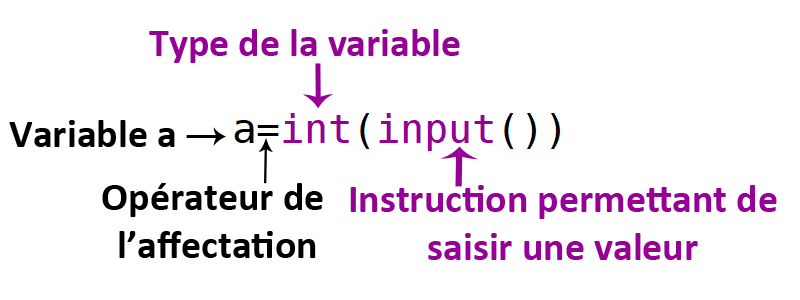

Chapitre 4 – Programmation en Python
Variables, lecture et écriture (2/2)
1 Variables et opérations
▶ Guide vidéo de la séance Astuce : ouvre le guide dans une fenêtre et cette page dans une autre pour suivre plus facilement.
Les variables peuvent changer de valeur au cours d’un programme, soit en effectuant des opérations, soit par une nouvelle affectation.
- age = 16 stocke la valeur 16 dans une variable appelée
age. - print(age) écrit la valeur stockée dans
age: 16. - age = 18 stocke la valeur 18 dans le même espace mémoire. Sa valeur n’est plus 16 mais 18.
- print(age) écrit désormais 18.
Regardons maintenant le programme suivant et exécutons-le.
- On stocke la valeur 2 dans
nombre1. - On stocke la valeur 3 dans
nombre2. - On additionne
nombre1etnombre2, et on stocke le résultat dansnombre3. - On affiche la valeur de
nombre3: 5 (2 + 3).
Pour faire évoluer les valeurs des variables, on utilise des opérateurs. Il en existe plusieurs ; voici un tableau non exhaustif.
| Opérateur | Type de variable | Rôle |
|---|---|---|
+ | int, float | Additionne les valeurs. |
- | int, float | Soustrait les valeurs. |
* | int, float | Multiplie les valeurs. |
/ | int, float | Divise les valeurs. |
** | int, float | Puissance : a**b correspond à ab. |
+ | str | Concaténation de chaînes de caractères. |
Pour résumer ces opérateurs, exécute le programme suivant :
On obtient l’affichage des opérations 2+3 ; 2−3 ; 2×3 ; 2/3 ; 23.
Remarque : l’opération 2/3 donne un résultat arrondi. Certains calculs en Python ne donnent que des approximations, à cause de la conversion des nombres décimaux en binaire : la virgule flottante peut être inexacte. Pour les plus curieux, un article (assez difficile) est disponible sur Zeste de Savoir.
Si l’opérateur + est appliqué à des variables de type chaîne de caractères, le résultat est une concaténation : l’opération « fusionne » les deux chaînes en une seule.
Exemple :
On peut aussi réaffecter une valeur à une variable en exploitant celle déjà stockée en mémoire vive.
- On stocke dans
mon_argentla valeur 100. - On additionne 20 à la valeur de
mon_argent, puis on stocke le résultat dansmon_argent. L’opération est toujours exécutée avant l’affectation. - On affiche la valeur de
mon_argent: 120 (100 + 20).
Exercice 3
Crée un programme composé des variables suivantes : nb1 de valeur 5, nb2 de valeur 8, nb3 de valeur 3, et somme à laquelle on affecte l’addition de nb1, nb2 et nb3. Le programme affiche en sortie la valeur de somme.
Voir la correction
Exercice 4
1) Teste le programme ci-dessous.
2) « Déroule » le programme, c’est-à-dire explique le rôle de chacune des instructions.
Voir la correction
Chaque numéro correspond à l’instruction exécutée :
- On affecte à
ala valeur 5. - On affecte à
bla valeur 6. - On affecte à
cla valeur dea: 5. - On affecte à
ala valeur deb: 6. - On affecte à
bla valeur dec: 5. - On affiche « La valeur de la variable a est égale à » suivi de la valeur de
a: 6. - On affiche « La valeur de la variable b est égale à » suivi de la valeur de
b: 5.
Ce programme est appelé algorithme de permutation de variables.
2 Lecture : le flux d’entrée
Pour qu’il y ait interaction entre l’ordinateur et l’utilisateur, les deux interlocuteurs doivent pouvoir communiquer. L’utilisateur peut saisir des informations, en général avec un clavier ou un autre périphérique (manette, souris, micro, etc.). Ces informations sont stockées dans des variables et traitées par le programme.
L’ordinateur lit ces informations : on parle de lecture. L’utilisateur entre des informations dans l’ordinateur : on parle de flux d’entrée.
Voici un programme permettant de saisir une valeur :
- La première instruction affiche la chaîne « Saisir un nombre entier ».
- La deuxième instruction permet de stocker la valeur saisie dans la variable
a. - La troisième instruction affiche « Le nombre saisi est : » suivi de la valeur de
a.
Revenons sur la deuxième instruction et observons comment elle s’écrit.

Remarque : dans l’instruction input(), aucune information n’est placée entre les parenthèses. Pourtant, il est possible d’y ajouter une chaîne de caractères, qui sera affichée avant la saisie. Notre programme peut donc se transformer ainsi :
Pour te familiariser avec cette instruction, voici plusieurs exemples.
Exemple 4 : tape ton nom en exécutant le programme.
Remarque : c’est grâce aux flux d’entrée et de sortie que l’interaction entre l’homme et la machine, ainsi qu’entre machines, est possible.
Exemple complet :
Exercices
On considère le programme ci-dessous.
1) Teste-le. Quel est son rôle ?
2) Teste-le en saisissant des nombres décimaux. Que se passe-t-il ?
3) Corrige-le afin qu’il accepte les nombres décimaux.
Voir la correction
1) Le programme affiche le résultat de la multiplication de deux nombres saisis par l’utilisateur.
2) Avec des nombres décimaux, on obtient un message d’erreur : le programme attend deux valeurs entières, car les variables sont de type int.
3) Aux lignes 2 et 3, il faut remplacer le type int par float pour pouvoir saisir des nombres décimaux.
Crée un programme avec deux variables flottantes nommées cote et aire. L’utilisateur saisit la valeur de cote. Le programme donne l’aire d’un carré de côté cote.
Voir la correction
Crée un programme avec trois variables flottantes nommées longueur, largeur et aire. L’utilisateur saisit longueur et largeur. Le programme donne l’aire du rectangle correspondant.
Voir la correction
Crée un programme avec deux variables de type str nommées prenom et nom. Le programme demande à l’utilisateur son prénom et son nom, puis affiche « Salut ! » suivi du prénom et du nom saisis.
Voir la correction
1) Teste le programme ci-dessous et « déroule-le » : explique le rôle de chaque instruction.
2) Modifie-le pour qu’il permette aussi de rajouter de l’argent dans le coffre-fort. Attention : le texte affiché par l’ordinateur doit rester cohérent avec la situation.
Voir la correction
1)
- Ligne 1 : on affecte la valeur 10000 à
mon_coffre_fort. - Ligne 2 : on affiche « Combien de pièces d’or souhaitez-vous retirer de votre coffre-fort ? » et on affecte la valeur saisie à
pieces. - Ligne 3 : on affecte à
mon_coffre_fortsa valeur moins celle depieces. - Ligne 4 : on affiche « Vous avez retiré », la valeur de
pieces, « pièces d’or. Il vous reste », la valeur demon_coffre_fort, « pièces d’or ! ».
2)